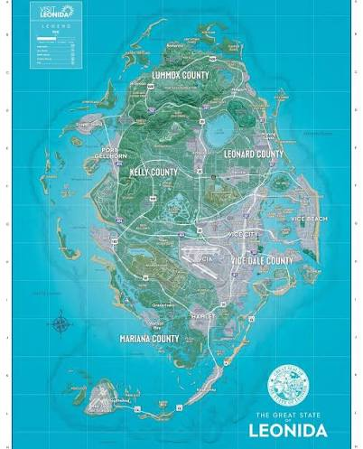

Mundo aberto
Estado de
Leonida
O mapa de GTA VI é um estado inteiro, inspirado na Flórida, com cidade, litoral, áreas alagadas e serra.
Mapa de Leonida
Clique nos pontos para conhecer cada lugar. Use os botões ou a roda do mouse para dar zoom e arraste para mover.

Imagem do mapa vazado em agosto de 2026, sem confirmação oficial da Rockstar Games.
Comece pela
cidade.
Vice City é o coração de Leonida e o melhor lugar para começar.
Conhecer Vice City